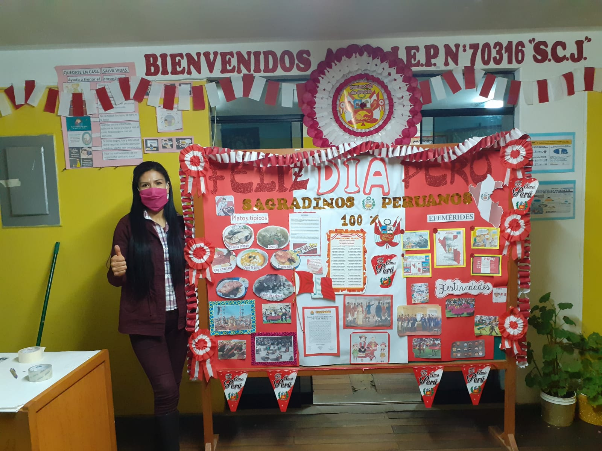
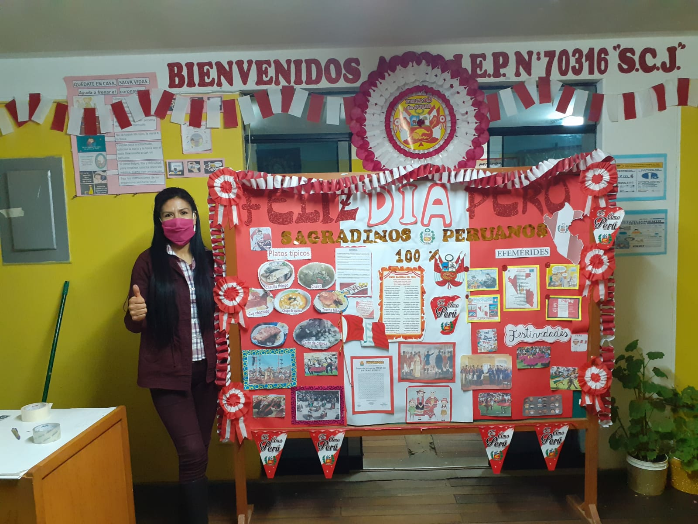
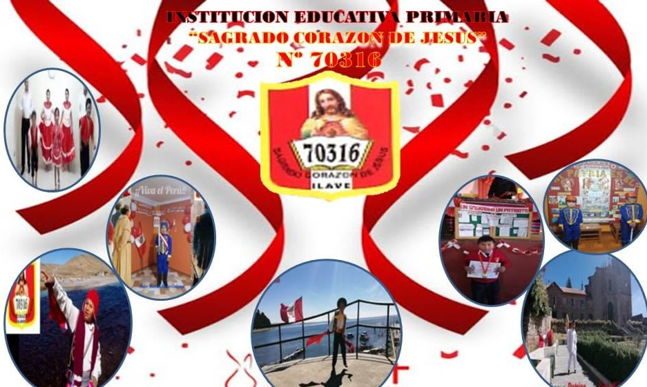
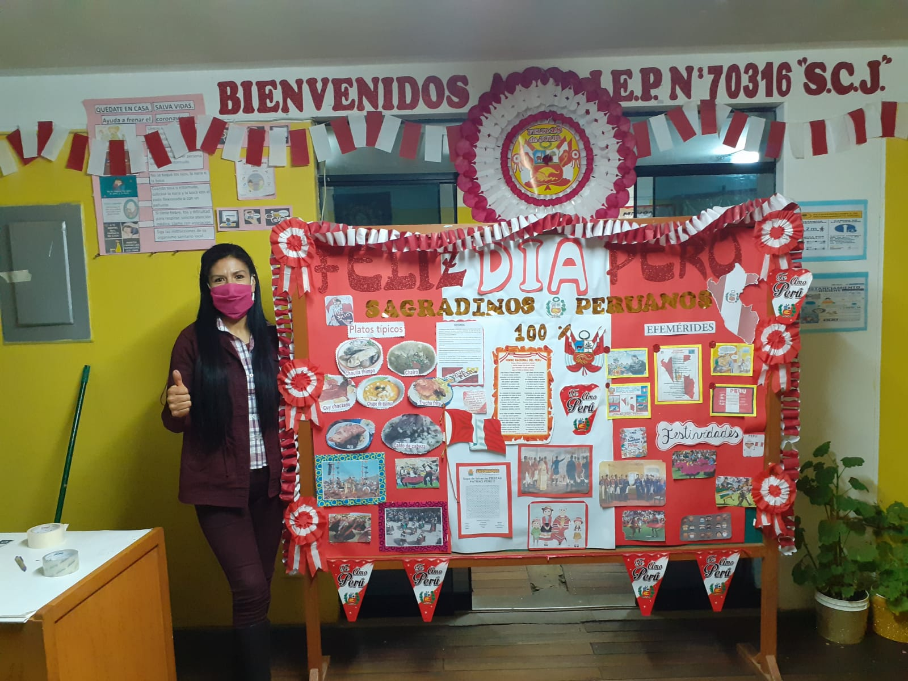

I.E.P. 70316 SAGRADO CORAZON DE JESUS
un ganador es un sagradino que nunca se rinde , y no olvides que todos los grandes logros requieren de tiempo y paciencia.
 


sagradinos de alma corazon y vida
un ganador es un sagradino que nunca se rinde , y no olvides que todos los grandes logros requieren de tiempo y paciencia.

Contribuir a que los niños desarrollen competencia que les garanticen desempeños satisfactorios en su vida, incidiendo en la práctica de los valores éticos y morales, capaces de adecuarse al cambio y a los retos del mundo globalizado, aplicando proyectos de innovación en los diferentes aspectos, para elevar la calidad educativa
construir una Institución Líder a nivel provincial, impartiendo una formación holística con la práctica de valores y mejorando la calidad educativa
diseñado por mely llanos - 2020